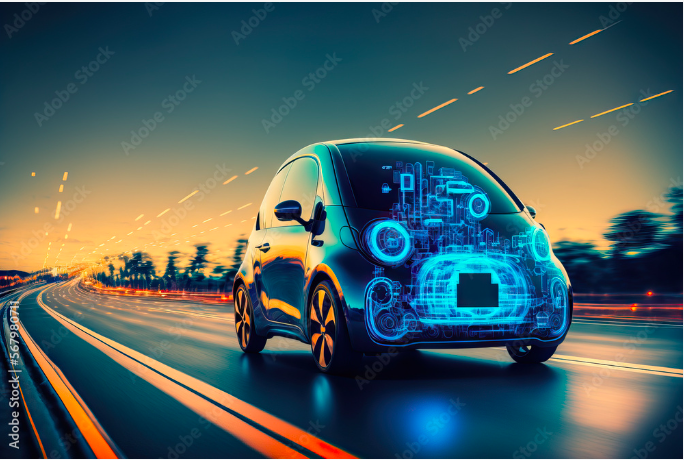

Key Features





Empowering Sustainable Entrepreneurship for Women through Design-Led Innovation for Global Impact. Becoming the top-notch Deep-Tech incubator for Women in India.
AIC GNITS will reach out to all stakeholders in the focus regions and focus areas. The innovation infrastructure and resources available at the disposal of AIC GNITS should be easily accessible to all the concerned stakeholders.
AIC GNITS shall attempt to allocate and distribute resources equitably amongst the seekers in the focus regions and focus areas with defined prioritization as laid down.
AIC GNITS shall maintain adequate transparency in its systems and processes as per statutory requirements and laid down principles/guidelines for its business operations.
AIC GNITS shall strive to achieve self-sufficiency and independence in its business operations and financial operations.